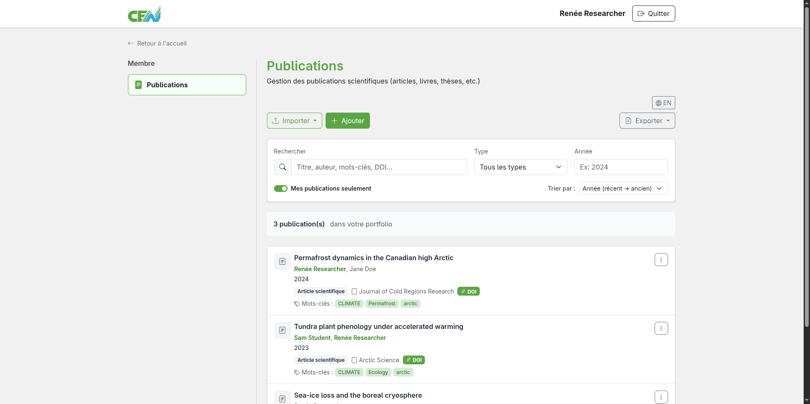
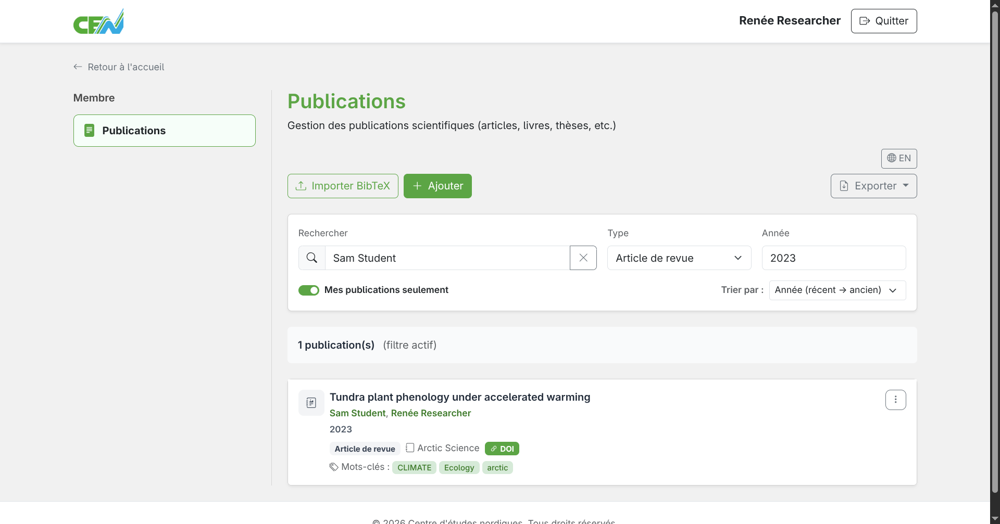
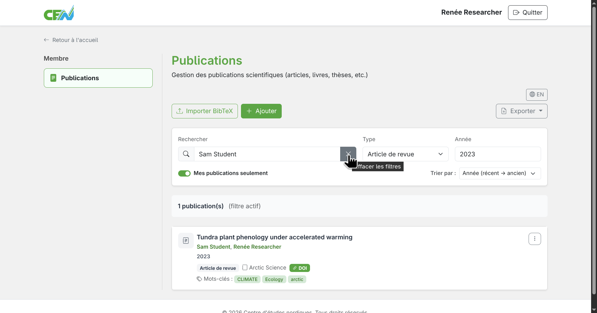
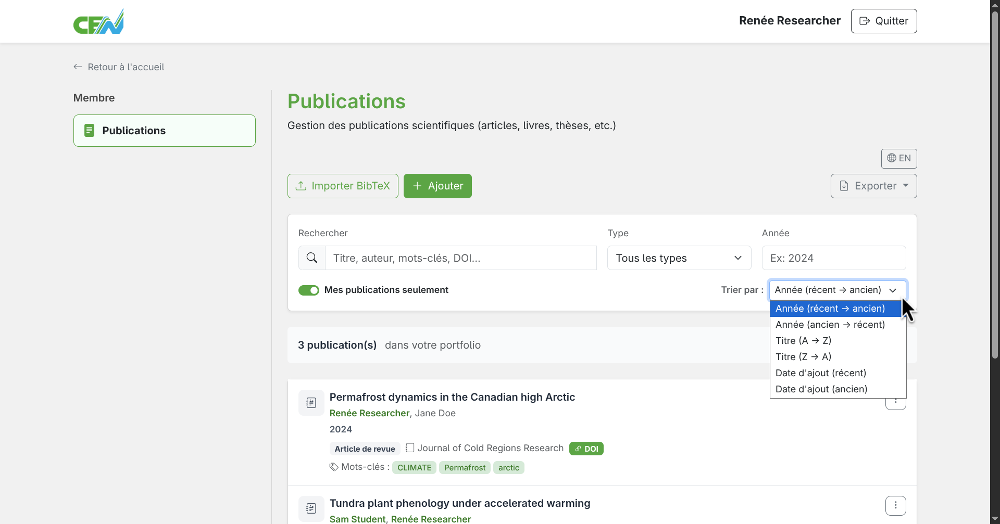
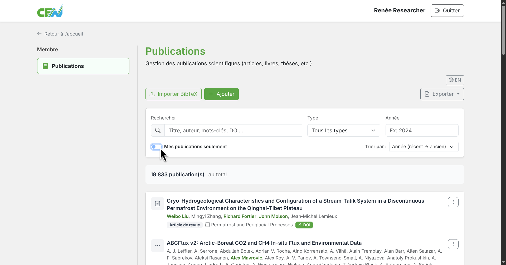
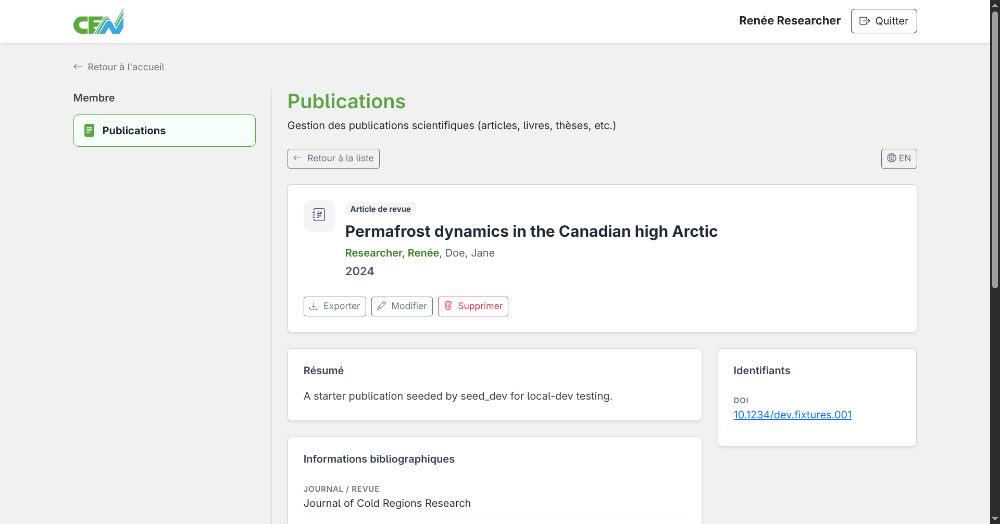

Searching Publications
The publications module lets you browse and filter your own publications as well as all publications by CEN members.
Accessing the publications list
From the module home page, publications are displayed as a list. You can scroll through the list or use the filtering tools to narrow down your results.

Filtering and searching publications
Several filters are available to refine your results:
- Title — filter by title
- Author — filter by author name
- Keywords — filter by keywords
- Discipline — filter by discipline
- Study site — filter by study site
- DOI — search by DOI
- WoS ID — search by Web of Science identifier
- Journal — filter by journal
- URL — search by URL
- Year — limit results to a publication year
- Publication type — article, book, chapter, conference, etc.
Use the search bar, the type dropdown, and the year field to filter publications. The search bar filters across multiple fields at once — simply type the terms one after another. For example, typing "John Doe Biology" will display publications where John Doe is an author and biology is one of his disciplines.

Clearing filters
To remove active filters, locate the X at the left end of the search bar. Click it to clear all filters.

Sorting results
To sort the filtered results, locate the "Sort by" dropdown below the year field.
Several sorting options are available:
- Year (recent → oldest) — Sort by publication year, most recent first
- Year (oldest → recent) — Sort by publication year, oldest first
- Title (A → Z) — Sort by title, alphabetically
- Title (Z → A) — Sort by title, reverse alphabetically
- Date added (recent) — Sort by date added, most recent first
- Date added (oldest) — Sort by date added, oldest first

Showing all publications
By default, the list only shows your own publications. You can also browse the entire CEN catalogue. To do so, locate the "My publications only" toggle. When checked, only your publications are shown. When unchecked, all publications in the CEN catalogue are displayed. Click the toggle to uncheck it.

Viewing a publication
Click on a publication title to open its full record: authors, abstract, DOI, year, type, and any other available metadata.

Next step: Create and edit publications →